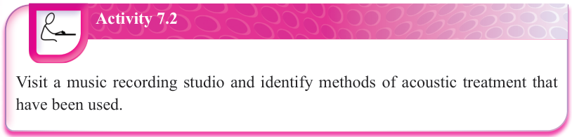
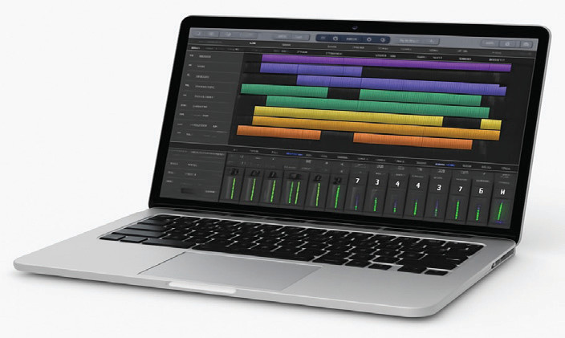

Exercise 7.2
Answer the following questions.
1.You walk into a studio to record a song, but you notice that your voice echoes when you speak.
What can be done to fix this specific problem?
2.A friend asks, “Why can’t we just record music in any room?”
How would you explain the importance of acoustic treatment in your own words?
Studio recording equipment
Several equipment and tools are required for music to be produced. The following are some of the basic equipment and tools used in music production:
(a) Computer: This is a device into which specific software for music production is installed. After installing the software, a music producer can use the computer to edit, mix and master recorded music. Figure 7.4 shows an example of a computer that can be used for music production.

Figure 7.4: A computer that can be used for music production(b) Keyboard MIDI controller: The term ‘MIDI’ stands for Musical Instrument Digital Interface. A keyboard MIDI controller does not usually create or produce sound by itself without being connected to the computer. When it is connected to a computer, the keys can be played, and the computer will convert what is played into sound. Figure 7.5 shows an example of a keyboard MIDI controller.